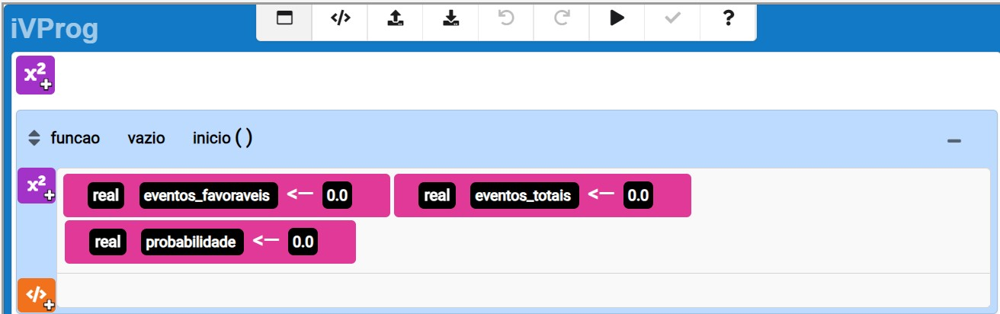

Aula 8: Revisão e Aplicações Práticas
Objetivo Geral:
Consolidar o conhecimento adquirido ao longo da sequência didática, revisando os principais conceitos e aplicando-os em problemas do mundo real.
Objetivos Específicos:
- Sintetizar os conceitos aprendidos ao longo da sequência didática.
- Aplicar os conhecimentos em situações práticas para reforçar a compreensão.
Desenvolvimento (60 minutos):
Revisão Conceitual (20 minutos):
Recapitular os conceitos fundamentais de probabilidade, incluindo probabilidade básica, condicional, teórica, diagramas de Venn, distribuições de probabilidade e modelagem probabilística.
Destacar pontos-chave e esclarecer dúvidas.
Atividade de Revisão (20 minutos):
Propor uma atividade que envolva a aplicação de diversos conceitos aprendidos ao longo da sequência.
Incentivar a colaboração entre os alunos para resolver problemas complexos.
Discussão e Resolução (10 minutos):
Grupos compartilham suas abordagens e resoluções.
Facilitar uma discussão aberta para esclarecer conceitos finais.
Aplicações Práticas (10 minutos):
Apresentar uma situação prática que demande a aplicação de múltiplos conceitos de probabilidade.
Incentivar os alunos a resolverem o problema individualmente ou em grupos.
Discussão Final e Reflexão (10 minutos):
DConcluir a aula com uma discussão sobre as aplicações práticas e como os conceitos de probabilidade podem ser úteis em diversas situações da vida real.
Tarefa de Casa Final:
Propor uma última tarefa de casa que estimule os alunos a aplicarem os conceitos de probabilidade em um contexto de sua escolha, promovendo a autonomia na aplicação do conhecimento adquirido.